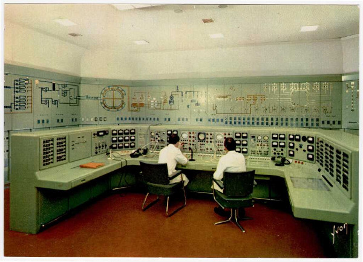

Vivre des aventures fantastiques dans l'univers de Tales From The Loop tout en restant proche de Paris vous excite ? Embarquement.
Le Manuel du MJ
Supplément principal, qui explore les lieux de l'aventure, présente des PNJs, des mystères, des scénarios, et y ajoute diverses aides de jeux .
Lieux
- Le plateau de Saclay est situé au sud de Paris, s'y croisent une population autochtone traditionnelle et les techno-scientifiques contemporains.
- Le CEA ou Commissariat à l'Énergie Atomique. Riksenergi, les rejets radioactifs en plus mais sans les rollmops.
- Forts militaires et aérodromes Naturellement riche en képis et en turbines, la région est le lieu de beaucoup d'expériences étranges.
Scénarios
Plusieurs scénarios sont fournis, du one-shot hyper court à la version multi sessions.
Mystères
Pour organiser des campagnes au long cours, rien de mieux que quelques histoires à connotation ésotérique.
Aides de jeux
- Cartes : modernes et anciennes de la région, des lieux, etc.
- Liste de prénoms courants en 84
- Liste de films sortis en 84
- Liste de musiques sorties en 84
- Série de personnages prétirés
- Portraits de gosses à coller sur les fiches
Le Manuel du joueur
Un document spécial pour joueurs et joueuses contenant les éléments qui leur seront nécessaires : explication du système de jeu, informations sur le setting, fiches de personnages, références culturelles des années 80.
Édition libre
Les documents sont disponibles librement en PDF et avec tous les fichiers source.